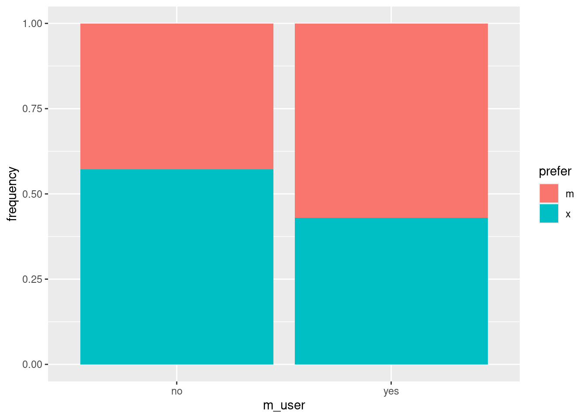

library(tidyverse)41 Frequency table analysis
Packages for this chapter:
41.1 College plans
5199 male high school seniors in Wisconsin1 were classified by socio-economic status (low, lower-middle, upper-middle, high), by the degree that their parents encouraged them in their education (low or high), and whether or not they had plans to go to college (yes or no). How, if at all, are these categorical variables related? The data can be found at link.
Read in the data and check that you have a column for each variable and a column of frequencies.
Fit a log-linear model containing all possible interactions. You don’t need to examine it yet.
Find out which terms (interactions) could be removed. Do you think removing any of them is a good idea?
Remove anything you can, and fit again. Hint:
update.Continue to examine what can be removed, and if reasonable, remove it, until you need to stop. Which terms are left in your final model?
Make suitable graphs of any remaining two-way interactions, and describe any relationships that you see.
41.2 Predicting voting
1257 British voters were classified according to their social class, age (categorized), sex and the political party they voted for (Labour or Conservative). Which, if any, of these factors influences the party that someone votes for? The data are in link, one voter per line.
Read in the data and display (some of) the data frame.
There is no frequency column here, because each row of the data frame only represents one voter. Count up the frequencies for each combo of the categorical variables, and save it (this is the data frame that we will use for the analysis). Display the first few rows of the result. Do you now have something that you need?
Fit a log-linear model with the appropriate interaction (as a starting point).
Refine your model by taking out suitable non-significant terms, in multiple steps. What model do you finish with?
If we think of the party someone votes for as the final outcome (that depends on all the other things), what does our final model say that someone’s vote depends on?
Obtain sub-tables that explain how
votedepends on any of the things it’s related to.
41.3 Brand M laundry detergent
A survey was carried out comparing respondents’ preferences of a laundry detergent M compared to a mystery brand X. For each respondent, the researchers recorded the temperature of the laundry load (low or high), whether or not they previously used brand M (yes or no), and the softness of the water used for the laundry load(hard, medium or soft). The aim of the survey was to find out what was associated with the respondents preferring brand M. The data are in http://ritsokiguess.site/datafiles/brand_m.csv.
Read in and display (some of) the data. Explain briefly how the data is laid out appropriately to fit a log-linear model.
Using backward elimination, build a suitable log-linear model for the associations between the variables. (Do not use
step; do the elimination yourself).What is associated with the brand a respondent prefers? By obtaining suitable frequency tables, describe the nature of these associations.
My solutions follow:
41.4 College plans
5199 male high school seniors in Wisconsin2 were classified by socio-economic status (low, lower-middle, upper-middle, high), by the degree that their parents encouraged them in their education (low or high), and whether or not they had plans to go to college (yes or no). How, if at all, are these categorical variables related? The data can be found at link.
- Read in the data and check that you have a column for each variable and a column of frequencies.
Solution
Delimited by one space:
my_url <- "http://ritsokiguess.site/datafiles/college-plans.txt"
wisc <- read_delim(my_url, " ")Rows: 16 Columns: 4
── Column specification ────────────────────────────────────────────────────────
Delimiter: " "
chr (3): social.stratum, encouragement, college.plans
dbl (1): frequency
ℹ Use `spec()` to retrieve the full column specification for this data.
ℹ Specify the column types or set `show_col_types = FALSE` to quiet this message.wiscAs promised. We only have 16 observations, because we have all possible combinations of categorical variable combinations, 4 social strata, times 2 levels of encouragement, times 2 levels of college plans.
Each line of the data file summarizes a number of students, not just one. For example, the first line says that 749 students were in the lower social stratum, received low encouragement and have no college plans. If we sum up the frequencies, we should get 5199 because there were that many students altogether:
wisc %>% summarize(tot = sum(frequency))\(\blacksquare\)
- Fit a log-linear model containing all possible interactions. You don’t need to examine it yet.
Solution
wisc.1 <- glm(frequency ~ social.stratum * encouragement * college.plans,
data = wisc, family = "poisson"
)\(\blacksquare\)
- Find out which terms (interactions) could be removed. Do you think removing any of them is a good idea?
Solution
This is drop1. If you forget the test=, you won’t get any P-values:
drop1(wisc.1, test = "Chisq")This P-value is not small, so the three-way interaction can be removed.
\(\blacksquare\)
- Remove anything you can, and fit again. Hint:
update.
Solution
In this kind of modelling, it’s easier to describe what changes should be made to get from one model to another, rather than writing out the whole thing from scratch again. Anyway, the three-way interaction can come out:
wisc.2 <- update(wisc.1, . ~ . - social.stratum:encouragement:college.plans)\(\blacksquare\)
- Continue to examine what can be removed, and if reasonable, remove it, until you need to stop. Which terms are left in your final model?
Solution
Start with drop1:
drop1(wisc.2, test = "Chisq")These are all strongly significant, so they have to stay. There is nothing else we can remove. All the two-way interactions have to stay in the model.
\(\blacksquare\)
- Make suitable graphs of any remaining two-way interactions, and describe any relationships that you see.
Solution
We have three graphs to make.
My first one is social stratum by parental encouragement. Neither of these is really a response, but I thought that social stratum would influence parental encouragement rather than the other way around, hence:
ggplot(wisc, aes(x = social.stratum, y = frequency, fill = encouragement)) +
geom_col(position = "fill")The social strata came out in an illogical order (alphabetical), but if you look back at the data we read in, the order there is a much more logical one, hence:
ggplot(wisc, aes(x = fct_inorder(social.stratum), y = frequency, fill = encouragement)) +
geom_col(position = "fill")This says that there tends to be more parental encouragement, the higher the social stratum (for the most part).
If you don’t like the \(x\)-axis label, define the fct_inorder thing into a new column first, and then plot that.
Next, this:
ggplot(wisc, aes(x = fct_inorder(social.stratum), y = frequency, fill = college.plans)) +
geom_col(position = "fill")I expected the some problems with social.stratum again, so I took the same action. In this one (and the next), college.plans is the response, so it gets to be fill.
The higher the social stratum, the more likely is a male high school senior to have plans to go to college. Once again, lower and lowermiddle are slightly out of order, but the overall pattern is clear enough.
Finally, this:
ggplot(wisc, aes(x = encouragement, y = frequency, fill = college.plans)) +
geom_col(position = "fill")And here you see an enormous effect of parental encouragement on college plans: if it is low, the high-school senior is very unlikely to be considering college.
Nothing, in all honesty, that is very surprising here. But the two-way interactions are easier to interpret than a three-way one would have been.
Here, we think of college plans as being a response, and this analysis has shown that whether or not a student has plans to go to college depends separately on the socio-economic status and the level of parental encouragement (rather than on the combination of both, as would have been the case had the three-way interaction been significant).
\(\blacksquare\)
41.5 Predicting voting
1257 British voters were classified according to their social class, age (categorized), sex and the political party they voted for (Labour or Conservative). Which, if any, of these factors influences the party that someone votes for? The data are in link, one voter per line.
- Read in the data and display (some of) the data frame.
Solution
Space-delimited:
my_url <- "http://ritsokiguess.site/datafiles/voting.txt"
vote0 <- read_delim(my_url, " ")Rows: 1257 Columns: 5
── Column specification ────────────────────────────────────────────────────────
Delimiter: " "
chr (4): class, age, sex, vote
dbl (1): id
ℹ Use `spec()` to retrieve the full column specification for this data.
ℹ Specify the column types or set `show_col_types = FALSE` to quiet this message.vote0I gave it a “disposable” name, since we make the “real” data set shortly.
\(\blacksquare\)
- There is no frequency column here, because each row of the data frame only represents one voter. Count up the frequencies for each combo of the categorical variables, and save it (this is the data frame that we will use for the analysis). Display the first few rows of the result. Do you now have something that you need?
Solution
I changed my mind about how to do this from last year. Using count is alarmingly more direct than the method I had before:
votes <- vote0 %>% count(class, age, sex, vote)
votesExactly the right thing now: note the new column n with frequencies in it. (Without a column of frequencies we can’t fit a log-linear model.) There are now only 58 combinations of the four categorical variables, as opposed to 1247 rows in the original data set (with, inevitably, a lot of repeats).
\(\blacksquare\)
- Fit a log-linear model with the appropriate interaction (as a starting point).
Solution
vote.1 <- glm(n ~ class * age * sex * vote, data = votes, family = "poisson")\(\blacksquare\)
- Refine your model by taking out suitable non-significant terms, in multiple steps. What model do you finish with?
Solution
Alternating drop1 and update until everything remaining is significant:
drop1(vote.1, test = "Chisq")Not anywhere near significant, so out it comes:
vote.2 <- update(vote.1, . ~ . - class:age:sex:vote)
drop1(vote.2, test = "Chisq")Take out the first one, since it has the highest P-value:
vote.3 <- update(vote.2, . ~ . - class:age:sex)
drop1(vote.3, test = "Chisq")class:sex:vote:
vote.4 <- update(vote.3, . ~ . - class:sex:vote)
drop1(vote.4, test = "Chisq")class:sex:
vote.5 <- update(vote.4, . ~ . - class:sex)
drop1(vote.5, test = "Chisq")I don’t like having three-way interactions, so I’m going to yank age:sex:vote now, even though its P-value is smallish:
vote.6 <- update(vote.5, . ~ . - age:sex:vote)
drop1(vote.6, test = "Chisq")The age-sex interaction can go, but we must be near the end now:
vote.7 <- update(vote.6, . ~ . - age:sex)
drop1(vote.7, test = "Chisq")And that’s it. The age and sex main effects are not included in the list of droppable things because both variables are part of higher-order interactions that are still in the model.
If you want to, you can look at the summary of your final model:
summary(vote.7)
Call:
glm(formula = n ~ class + age + sex + vote + class:age + class:vote +
age:vote + sex:vote + class:age:vote, family = "poisson",
data = votes)
Coefficients: (1 not defined because of singularities)
Estimate Std. Error z value Pr(>|z|)
(Intercept) 2.50737 0.21613 11.601 < 2e-16 ***
classupper middle -0.45199 0.34188 -1.322 0.186151
classworking 0.37469 0.27696 1.353 0.176088
age>75 -0.25783 0.32292 -0.798 0.424622
age26-40 0.34294 0.27877 1.230 0.218619
age41-50 0.93431 0.25162 3.713 0.000205 ***
age51-75 0.89794 0.25293 3.550 0.000385 ***
sexmale -0.23242 0.08016 -2.900 0.003737 **
votelabour -0.50081 0.33324 -1.503 0.132882
classupper middle:age>75 0.25783 0.49713 0.519 0.604013
classworking:age>75 0.01097 0.41896 0.026 0.979113
classupper middle:age26-40 0.82466 0.41396 1.992 0.046358 *
classworking:age26-40 0.41083 0.35167 1.168 0.242713
classupper middle:age41-50 0.37788 0.39239 0.963 0.335542
classworking:age41-50 -0.28917 0.33310 -0.868 0.385327
classupper middle:age51-75 0.43329 0.39277 1.103 0.269954
classworking:age51-75 0.10223 0.32668 0.313 0.754325
classupper middle:votelabour -0.12338 0.53898 -0.229 0.818936
classworking:votelabour 1.05741 0.39259 2.693 0.007073 **
age>75:votelabour -0.72300 0.57745 -1.252 0.210547
age26-40:votelabour 0.21667 0.41944 0.517 0.605452
age41-50:votelabour -0.93431 0.43395 -2.153 0.031315 *
age51-75:votelabour -0.62601 0.41724 -1.500 0.133526
sexmale:votelabour 0.37323 0.11334 3.293 0.000992 ***
classupper middle:age>75:votelabour NA NA NA NA
classworking:age>75:votelabour -0.29039 0.68720 -0.423 0.672607
classupper middle:age26-40:votelabour -0.53698 0.65445 -0.821 0.411931
classworking:age26-40:votelabour -0.28479 0.49429 -0.576 0.564516
classupper middle:age41-50:votelabour -0.01015 0.68338 -0.015 0.988147
classworking:age41-50:votelabour 1.06121 0.50772 2.090 0.036603 *
classupper middle:age51-75:votelabour -0.06924 0.65903 -0.105 0.916328
classworking:age51-75:votelabour 0.16608 0.49036 0.339 0.734853
---
Signif. codes: 0 '***' 0.001 '**' 0.01 '*' 0.05 '.' 0.1 ' ' 1
(Dispersion parameter for poisson family taken to be 1)
Null deviance: 797.594 on 57 degrees of freedom
Residual deviance: 22.918 on 27 degrees of freedom
AIC: 350.41
Number of Fisher Scoring iterations: 4These tend to be rather unwieldy, and we’ll see a better way of understanding the results below, but you can look for the very significant results, bearing in mind that the first category is the baseline, for example, more of the males in the survey voted Labour (than Conservative).
\(\blacksquare\)
- If we think of the party someone votes for as the final outcome (that depends on all the other things), what does our final model say that someone’s vote depends on?
Solution
Find out which of the surviving terms are interactions with vote. Here, there are two things, that vote depends on separately:
sexThe
age-classinteraction.
\(\blacksquare\)
- Obtain graphs that help you explain how
votedepends on any of the things it’s related to.
Solution
The 3-way interaction is a bit tricky, so we’ll do the simpler one first:
ggplot(votes, aes(x = sex, y = n, fill = vote)) +
geom_col(position = "fill")The female voters slightly preferred to vote Conservative3 and the male voters slightly preferred to vote Labour. This is a small effect, but I guess the large number of voters made it big enough to be significant.
I took it this way around because vote is the outcome, and therefore I want to address things like “if a voter is female, how likely are they to vote Labour”, rather than conditioning the other way around (which would be “if a voter voted Labour, how likely are they to be female”, which doesn’t make nearly so much sense).
Then the tricky one. For this, we need to choose one of the explanatory variables to be x and the other one to be facets. There is no particular reason to do it one way around rather than the other; experiment with switching x and the variable in facet_wrap around and see whether it’s easier to interpret:
ggplot(votes, aes(x = age, y = n, fill = vote)) +
geom_col(position = "fill") + facet_wrap(~ class)The age and class categories are in an illogical alphabetical order, but they were out of order in the original dataset too, so I guess we have to live with what we see here.
Doing it this way has produced different graphs for each class. This is actually OK, because we can say “if a voter was of lower middle class” and then talk about the relationship between age and vote, as if we were looking at a simple effect:
If a voter was of lower-middle-class, they strongly favour voting Conservative in all age groups except for
<26and 26–40.If a voter was of upper-middle-class, they even more strongly favour voting Conservative in all age groups except for “under 26” and maybe 26–40.
If a voter was of Working class, they strongly favour voting Labour, except in the “over 75” age group (and maybe 51–75 as well).
If the anomalous age group(s) had been the same one every time, there would no longer have been an interaction between age and class in their effect on vote. But the anomalous age groups were different for each class (“different pattern”), and that explains why there was a vote:age:class interaction: ” the way someone votes depends on the combination of age and social class”.
Extra 1: I have been using the dataframe with frequencies in it, and telling you to use geom_col rather than the geom_bar you might have been expecting, which is because we have frequencies and each row of the dataframe represents a bunch of people rather than just one. But let’s remind ourselves of the dataframe we had called vote0:
vote0This has exactly one voter per row (there were 1257 people in the original survey), and so with this one you can use geom_bar to get the same graphs we got above using geom_col. For example:
ggplot(vote0, aes(x = age, fill = vote)) +
geom_bar(position = "fill") + facet_wrap(~ class)geom_bar doesn’t allow a y, but vote0 doesn’t have the frequency column that we were using for the y, so we just take it out.
Extra 2: The Labour Party in the UK is like the NDP here, in that it has strong ties with “working people”, trades unions in particular. The Conservatives are like the Conservatives here (indeed, the nickname “Tories” comes from the UK; the Conservatives there were officially known as the Tories many years ago). Many people are lifelong voters for their party, and would never think of voting for the “other side”, in the same way that many Americans vote either Democrat or Republican without thinking about it too much. Our parliamentary system comes from the UK system (vote for a candidate in a riding, the leader of the party with the most elected candidates becomes Prime Minister), and a “landslide” victory often comes from persuading enough of the voters open to persuasion to switch sides. In the UK, as here, the parties’ share of the popular vote doesn’t change all that much from election to election, even though the number of seats in Parliament might change quite a lot. Provincial elections in Canada work the same way; you might remember that the current (as of 2022) Conservative majority in Ontario came from less than 40% of the vote.
\(\blacksquare\)
41.6 Brand M laundry detergent
A survey was carried out comparing respondents’ preferences of a laundry detergent M compared to a mystery brand X. For each respondent, the researchers recorded the temperature of the laundry load (low or high), whether or not they previously used brand M (yes or no), and the softness of the water used for the laundry load(hard, medium or soft). The aim of the survey was to find out what was associated with the respondents preferring brand M. The data are in http://ritsokiguess.site/datafiles/brand_m.csv.
- Read in and display (some of) the data. Explain briefly how the data is laid out appropriately to fit a log-linear model.
Solution
The reading-in is entirely familiar:
my_url <- "http://ritsokiguess.site/datafiles/brand_m.csv"
prefs <- read_csv(my_url)Rows: 24 Columns: 5
── Column specification ──────────────────────────────────────────────────────────────────
Delimiter: ","
chr (4): softness, m_user, temperature, prefer
dbl (1): frequency
ℹ Use `spec()` to retrieve the full column specification for this data.
ℹ Specify the column types or set `show_col_types = FALSE` to quiet this message.prefsThis is good because we have each “observation” (frequency, here) in one row, or, said differently, we have a column of frequencies and each of the factors in a column of its own. (See the Extra for the kind of layout we might have had to deal with.)
Extra: as you might expect, this is very much not how the data came to me. It was originally in a textbook, laid out like this:

This is a common layout for frequency data, because it saves a lot of space. Multiple header rows are hard to deal with, though, so I combined the three column variables into one with a layout like this (aligned in columns):
softness no_low_x no_low_m no_high_x no_high_m yes_low_x yes_low_m yes_high_x yes_high_m
hard 68 42 42 30 37 52 24 43
medium 66 50 33 23 47 55 23 47
soft 63 53 29 27 57 49 19 29Let’s read this in and then think about what to do with it:
prefs0 <- read_table("brand_m.txt")
── Column specification ──────────────────────────────────────────────────────────────────
cols(
softness = col_character(),
no_low_x = col_double(),
no_low_m = col_double(),
no_high_x = col_double(),
no_high_m = col_double(),
yes_low_x = col_double(),
yes_low_m = col_double(),
yes_high_x = col_double(),
yes_high_m = col_double()
)prefs0We want to get all those frequencies into one column, which suggest some kind of pivot_longer.There are two ways to go about this. One is to try a regular pivot_longerand see what happens. I had to think for a moment about what to call the column that ended up as combo:
prefs0 %>% pivot_longer(-softness, names_to = "combo", values_to = "frequency")This is the right kind of shape, but those things in the column combo are three variables all smooshed together: respectively, previous user (of brand M), temperature, preference (you can tell by the values, which are all different). These can be split up with separate, thus:
prefs0 %>% pivot_longer(-softness, names_to = "combo", values_to = "frequency") %>%
separate_wider_delim(combo, "_",
names = c("prev_user", "temperature", "preference"))That works, but the combination of pivot_longer and a separate is a common one, and so there is an “advanced” version of pivot_longer that does it all at once. The idea is that you enter three columns into names_to and then use names_sep to say what they’re separated by:
prefs0 %>%
pivot_longer(-softness,
names_to = c("m_user", "temperature", "prefer"),
names_sep = "_", values_to = "frequency") This data frame is what I saved for you.
\(\blacksquare\)
- Using backward elimination, build a suitable log-linear model for the associations between the variables. (Do not use
step; do the elimination yourself).
Solution
The first step is to fit a model containing all the interactions between the factors, using frequency as the response, and then to use drop1 with test="Chisq" to see what can come out. Don’t forget the family = "poisson", since that’s what drives the modelling. I tnink it’s easiest to number these models, since there might be a lot of them:
prefs.1 <- glm(frequency~softness*m_user*temperature*prefer, family = "poisson", data=prefs)
drop1(prefs.1, test = "Chisq")To our relief, the four-way interaction is not significant and can be removed. (I was not looking forward to the prospect of interpreting that!)
Now write an update line that removes that four-way interaction from your model, as shown below, and copy-paste your drop1 line from above, changing the number of your model to the one coming out of update. Copy-paste the complicated interaction from the drop1 output:
prefs.2 <- update(prefs.1, .~.-softness:m_user:temperature:prefer)
drop1(prefs.2, test = "Chisq")There are now four three-way interactions that could be removed. You might suspect that they are all going to go eventually, but as in regression, we take them one at a time, starting with the one that has the highest P-value (just in case, for example, the P-value of the second one goes under 0.05 when we remove the others). The easiest way to do the coding is a vigorous amount of copying and pasting. Copy-paste your last code chunk:
prefs.2 <- update(prefs.1, .~.-softness:m_user:temperature:prefer)
drop1(prefs.2, test = "Chisq")Change the interaction in the update to the one you want to remove (from the drop1 table), which is softness:temperature:prefer (you can copy-paste that too), and then increase all three of the model numbers by 1:
prefs.3 <- update(prefs.2, .~.-softness:temperature:prefer)
drop1(prefs.3, test = "Chisq")Then, as they say, rinse and repeat. This one takes a while, but each step is just like the others.
drop softness:m_user:temperature
prefs.4 <- update(prefs.3, .~.-softness:m_user:temperature)
drop1(prefs.4, test = "Chisq")drop m_user:temperature:prefer
prefs.5 <- update(prefs.4, .~.-m_user:temperature:prefer)
drop1(prefs.5, test = "Chisq")drop m_user:temperature
prefs.6 <- update(prefs.5, .~.-m_user:temperature)
drop1(prefs.6, test = "Chisq")drop softness:m_user:prefer
prefs.7 <- update(prefs.6, .~.-softness:m_user:prefer)
drop1(prefs.7, test = "Chisq")More two-ways.
drop softness:prefer
prefs.8 <- update(prefs.7, .~.-softness:prefer)
drop1(prefs.8, test = "Chisq")One more?
drop softness:m_user
prefs.9 <- update(prefs.8, .~.-softness:m_user)
drop1(prefs.9, test = "Chisq")And finally we are done! There are three two-way interactions left, which shouldn’t be too hard to interpret. That’s in the next part.
\(\blacksquare\)
- What is associated with the brand a respondent prefers? By obtaining suitable graphs, describe the nature of these associations.
Solution
To see what is associated with brand preference, look for significant associations with prefer. There are two of them, one with m_user, and, separately, one with temperature. This means that a respondent’s brand preference depends on whether or not they previously used brand M, and also on what temperature the laundry was washed at.
To investigate these, we need the variation on the two-variable bar chart. Here’s m_user (explanatory) with prefer (response):
ggplot(prefs, aes(x = m_user, y = frequency, fill = prefer)) +
geom_col(position = "fill")
Out of the people who were previous users of Brand M (on the right), slightly more of them preferred Brand M; out of the people who were not Brand M users (on the left), somewhat more of them preferred Brand X.
Advertisers use terms like “brand familiarity” to capture ideas like this: more people prefer Brand M in the survey if they have used it before. Not altogether surprising.
On to the effects of temperature on preference:
ggplot(prefs, aes(x = temperature, y = frequency, fill = prefer)) +
geom_col(position = "fill")Out of the people who used a high-temperature wash, a small majority of them preferred brand M, but out of the people who used a low-temperature wash, a small majority of them preferred brand X.
I’m making it seem like this is a big difference, and of course it’s a very small one, but the size of the survey makes even this tiny difference significant.
Those are really the two effects of interest, since they are the ones associated with brand preference. But there was one more association that was significant: between temperature and softness. The softness in this case was of the water used to do the laundry (and not, for example, the softness of the clothes after they come out of the dryer). There isn’t really any reason to pick one of these as the response, but we have to make a choice for the graph. I decided to condition on the softness of the water, since that cannot be controlled by the person doing the laundry (the water just is hard or soft, depending on where you live and where your water comes from).
ggplot(prefs, aes(x = softness, y = frequency, fill = temperature)) +
geom_col(position = "fill")In each case, a majority of the washes were done at low temperature, but the softer the water, the bigger that majority was. Once again, the effect is not all that big, because the association was only just significant.
\(\blacksquare\)